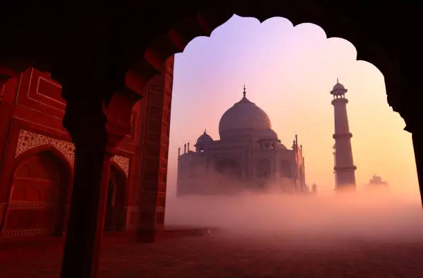
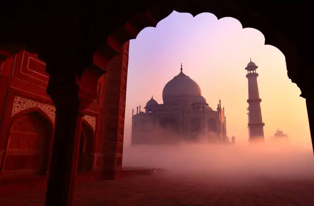
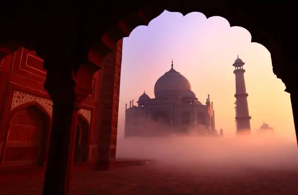
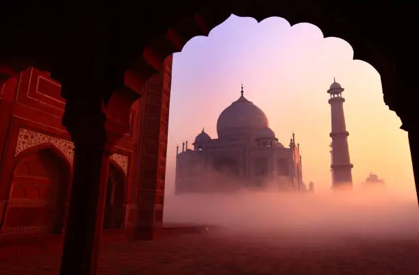

The Taj Mahal, a UNESCO World Heritage Site and one of the Seven Wonders of the World, stands as a testament to India's rich history, architectural genius, and the eternal power of love. Located in Agra, Uttar Pradesh, this iconic monument attracts millions of visitors from around the globe each year. Built in the 17th century by the Mughal emperor Shah Jahan in memory of his beloved wife Mumtaz Mahal, the Taj Mahal is more than just a mausoleum—it's a story carved in white marble.
The story of the Taj Mahal begins with a love that transcended time. Shah Jahan, the fifth Mughal emperor, was deeply devoted to Mumtaz Mahal. Tragically, Mumtaz passed away in 1631 while giving birth to their 14th child. Devastated by her death, Shah Jahan vowed to create a monument that would honor her memory forever. Construction of the Taj Mahal began in 1632 and took over 20 years to complete. Over 20,000 artisans, craftsmen, and laborers from across the Mughal empire contributed to its construction. The finest materials, including white marble from Makrana in Rajasthan and precious stones from all over Asia, were used to create this architectural masterpiece.
The Taj Mahal is an epitome of Mughal architecture, which blends elements of Islamic, Persian, Ottoman, and Indian styles.
The Taj Mahal is not just a masterpiece of architecture but a symbol of eternal love and devotion. Its design is steeped in symbolism, with the white marble signifying purity, the dome representing the heavens, and the gardens depicting the Islamic concept of paradise. Over the centuries, the Taj Mahal has inspired countless poets, artists, and lovers. Its beauty remains unmatched, and its legacy as a symbol of India's rich cultural heritage continues to endure.
Tickets can be purchased online or at the entrance gates. Special tickets are available for moonlight viewing, but they must be booked in advance.
Over the years, pollution and environmental factors have posed threats to the Taj Mahal. The government has taken steps to preserve its beauty, such as limiting industrial activities in the vicinity and using mud packs to clean the marble.
Visitors are encouraged to support these efforts by respecting the site and following eco-friendly practices during their visit.
The Taj Mahal is more than a monument; it's an emotion that resonates with all who visit. Its timeless beauty and the poignant story of love it represents make it a must-see destination for anyone traveling to India. Standing before this magnificent structure, one can’t help but feel awe-inspired by the grandeur and artistry of human creation. So, if you haven't yet, plan your trip to Agra and experience the magic of the Taj Mahal—a wonder that truly lives up to its name.